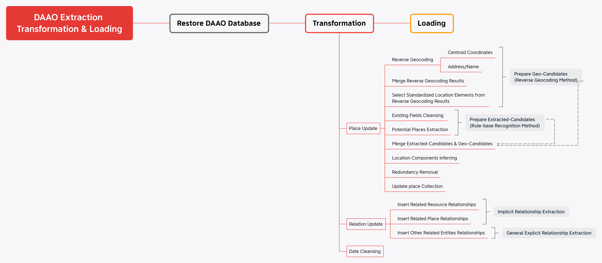
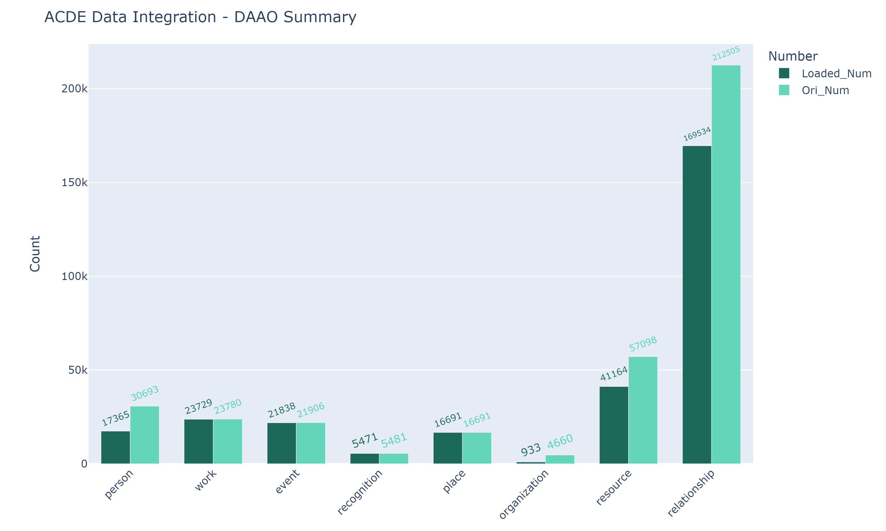

Design & Art Australia Online
Contents
Design & Art Australia Online¶
Introduction¶
Design and Art Australia Online (DAAO) is a collaborative e-Research tool built upon the foundations of the Dictionary of Australian Artists Online. DAAO is an open source freely accessible scholarly e-Research tool that links biographical data about Australian artists, designers, craftspeople and curators with information about artworks, event histories and collection details.
The following sections will describe the data processing procedure that integrates DAAO data into ACDE and the data sumary of DAAO.
Data Processing¶
Data Extraction & Exploration¶
The DAAO data was provided in the format of MongoDB database dump. The dump was restored, and 20 collections were found in the DAAO database, which including:
Main collections for the main objects and their relationships: xactivity, xparty, xwork, xpredicate, relation
The corresponding version-controlling collections for main collections: xactivity_counters, xactivity_revisions, xparty_counters, xparty_revisions, xwork_counters, xwork_revisions
Dependency collections for detailed information and the convenience of display : asset, controlledvocab, culturalheritage, externalresource, predicate, place, indigenousdreaming, stubperson, stubpersongroup
For more details of restoring DAAO database, please check DAAO_DBRestore.ipynb.
Since DAAO is an archive of data that is updated cumulatively, there is no up-to-date confirmed data model or data dictionary to refer to. However, a conceptual data model can be roughly inferred based on the actual display of official website, physical database, expert suggestions as well as previsous documentation. The conceptual data model is shown as following:

The schema of DAAO can also be confirmed as following:

During the exploration of the DAAO database, some concerns have been identified that should be taken into account when establishing the transforming and loading pipeline.
Firstly, it should be noted that not all records in the main entity collections are shown on the official website. Through comparing the data between the website and the raw database, it became apparent that some boolean fields like is_locked, is_primary, is_shadow, is_featured and is_deleted need to be filtered out in order to select only reliable records.
Secondly, the consistency of relationship records needs to be considered. The data in the relation collection doesn’t include all relationships displayed on the official website. It appears that this collection may not have been updated after the last structural renovation of the website. Therefore, the collection of relationships needs to be reconstructed based on up-to-date relations.
Lastly, the place information is somewhat confusing. Although there are only four effective fields in the place collection, namely name, address, country, and centroid, the values in name, address, and country are often mixed up. As such, it is important to implement a place information normalization process that utilizes all available effective information to generate a standardized place record. This is particularly important for downstream analysis that requires spatial visualization.
Data Transformation¶

Regarding the complexity of the DAAO data structure and the concerns found during DAAO data exploration, a three-step approach is proposed for DAAO data transformation.
The first step is normalizing the place records. The purpose of this step is to standardize the geo-elements of place records that are not consistently formatted, and to normalize the expression of name and address of specific places.
To achieve this, two methods are implemented to infer the standardized elements of place information such as country, state, city, suburb, and optionally postcode.
The first method is reverse geocoding, which involves using the latitude and longitude coordinates, as well as existing name and address in the DAAO database to find potential standardized address elements and place names. The reverse geocoding process generates two types of standardized location element candidate sets, which are merged to create a new place element candidate set. During this process, standardized location element candidate sets are selected from the reverse geocoding results.
The second method is rule-based recognition. This method involves cleaning all place elements, such as address, name, and country, by correcting typos and expanding place name abbreviations. Then, potential places in the cleaned place elements are identified to create the second set of potential standardized place element candidates.
Once the two sets of candidates are ready, the extracted-candidates and geo-candidates are merged to create a final set of standardized place element candidates for the place records. The final place elements are confirmed by comparing each level of place element candidate from top (country) to down (suburb), excluding the inconsistent candidates and keeping the most frequent candidates. Any redundant place element still present is removed by comparing whether the element is matching with all the other place elements.
Finally, the cleaned location components can be updated to the place collection. This normalization process standardizes the geo-elements and place name expressions of the place records, making it easier to work with the data and reducing potential errors caused by inconsistent or incomplete data.
For more details of updating place information of DAAO, please check jupyter notebook DAAO_PlaceUpdate.ipynb.
The second step is aggregating all the relationship records into a new collection relationship. There are related_xxx attributes existing in the records of main object collections (xparty, xactivity, and xwork), which shows the relationships among the main objects. However, in ACDE, relationships with resource and place that are not explicitly assigned as related_xxx attributes in DAAO records are also crucial. Therefore, the attributes showing relationships with resource and place hidden should be firstly found and inserted into new collection relationship. For instance, see_alsos, references, images, portrait_images are the attributes that connect resource with other entities, while the place of birth and death are the attributes showing relationships between person and place. And after the implicit relationship extraction, the explicity relationships under related_xxx attributes of each main object can inserted into the collection relationship.
For more details of reconstructing relationship collection of DAAO, please check jupyter notebook DAAO_RelationUpdate.ipynb.
The third step is standardizing the format of date attributes. In all collections with date attributes, namely xparty, xactivity, xwork, externalresource, all the relevant date attributes are updated as the format of json documents having year, month, day. The original data of the collections are backed up into the collections named {collection_name}_ori.
For more details of cleansing date fields in DAAO, please check jupyter notebook DAAO CleanDates.ipynb.
Data Loading¶
After making extensive preparations during the transformation process, it is now possible to map the corresponding entities/attributes of DAAO to the levels/attributes in ACDEA. Finally, related records were aggregated from the relationship level and updated into the related attribute of the original records.
On entity level, the DAAO entity projection is listed as follows:
DAAO Entity (Collection) |
ACDEA Level |
|---|---|
xparty.person |
person |
xwork.work |
work |
xactivity.Event |
event |
xactivity.Recognition |
recognition |
place |
place |
xparty.PersonGroup |
organization |
external resource, asset |
resource |
relationship |
relationship |
On attribute level, please find the attribute mapping details in the notes of DAAO data dictionary. The data dictionary can be downloaded below.
For more details of data loading of DAAO, please check jupyter notebook DAAO_Loading.ipynb.
Integration Data Report¶
The following chart, which was generated by the jupyter notebook DAAO_IntegrationSummary.ipynb, illustrates the number of DAAO records before and after integration.
